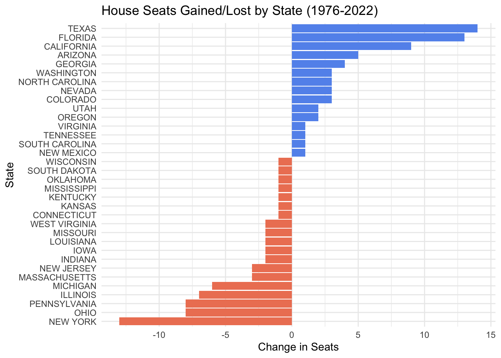
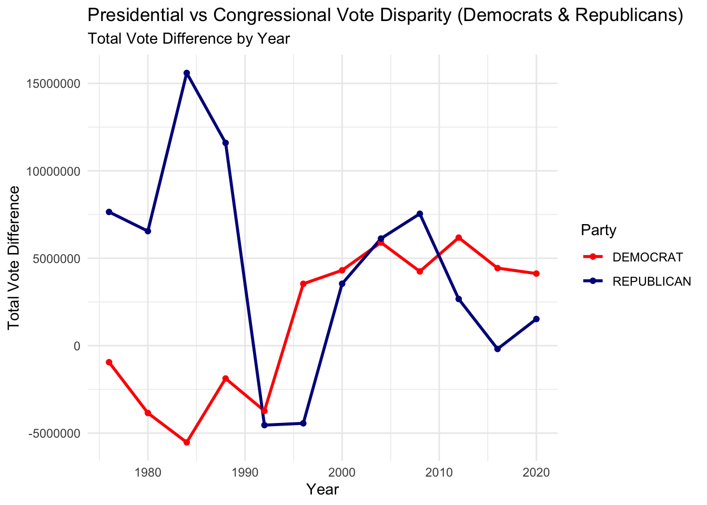
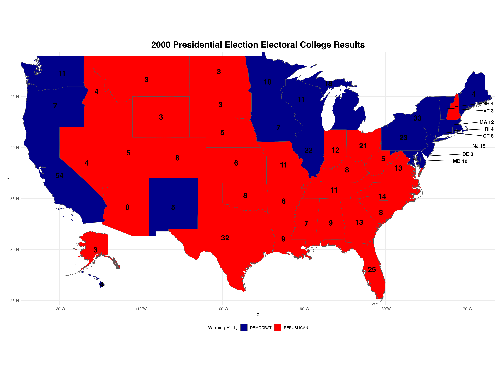
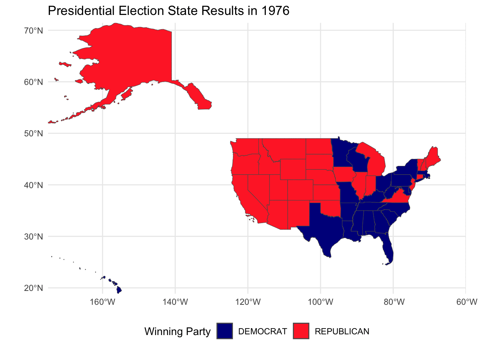

The US Constitution sets the basic rules of electing the President in Section 1 of Article II, which we quote here in part:
Each State shall appoint, in such Manner as the Legislature thereof may direct, a Number of Electors, equal to the whole Number of Senators and Representatives to which the State may be entitled in the Congress: but no Senator or Representative, or Person holding an Office of Trust or Profit under the United States, shall be appointed an Elector.
The Electors shall meet in their respective States, and vote by Ballot for two Persons, of whom one at least shall not be an Inhabitant of the same State with themselves. And they shall make a List of all the Persons voted for, and of the Number of Votes for each; which List they shall sign and certify, and transmit sealed to the Seat of the Government of the United States, directed to the President of the Senate. The President of the Senate shall, in the Presence of the Senate and House of Representatives, open all the Certificates, and the Votes shall then be counted. The Person having the greatest Number of Votes shall be the President, if such Number be a Majority of the whole Number of Electors appointed; and if there be more than one who have such Majority, and have an equal Number of Votes, then the House of Representatives shall immediately chuse by Ballot one of them for President; and if no Person have a Majority, then from the five highest on the List the said House shall in like Manner chuse the President. But in chusing the President, the Votes shall be taken by States, the Representation from each State having one Vote; A quorum for this Purpose shall consist of a Member or Members from two thirds of the States, and a Majority of all the States shall be necessary to a Choice. In every Case, after the Choice of the President, the Person having the greatest Number of Votes of the Electors shall be the Vice President. But if there should remain two or more who have equal Votes, the Senate shall chuse from them by Ballot the Vice President. Though the details have varied over time due to amendment, statue, and technology, this basic outline of this allocation scheme remains unchanged:
Each state gets electoral college votes, where is the number of Representatives that state has in the US House of Representatives. In this mini-project, you can use the number of districts in a state to determine the number of congressional representatives (one per district). States can allocate those votes however they wish The president is the candidate who receives a majority of electoral college votes Notably, the Constitution sets essentially no rules on how the electoral college votes (ECVs) for a particular state are allocated. At different points in history, different states have elected to use each of the following:
Direct allocation of ECVs by state legislature (no vote) Allocation of all ECVs to winner of state-wide popular vote Allocation of all ECVs to winner of nation-wide popular vote Allocation of ECVs to popular vote winner by congressional district + allocation of remaining ECVs to the state-wide popular vote winner Currently, only Maine and Nebraska use the final option; the other 48 states and the District of Columbia award all ECVs to the winner of their state-wide popular vote. We emphasize here that “statewide winner-take-all” is a choice made by the individual states, not dictated by the US constitution, and that states have the power to change it should they wish.1
To my knowledge, no US state uses true proportionate state-wide representation, though I believe such a ECV-allocation scheme would be consistent with the US Constitution. For example, if a state with 5 ECVs had 60,000 votes for Candidate A and 40,000 cast for Candidate B, it could award 3 ECVs to A and 2 to B, regardless of the spatial distribution of those votes within the state.
Set-Up and Initial Exploration
Data I: US House Election Votes from 1976 to 2022
The MIT Election Data Science Lab collects votes from all biennial congressional races in all 50 states here. Download this data as a CSV file using your web browser. Note that you will need to provide your contact info and agree to cite this data set in your final report.
Additionally, download statewide presidential vote counts from 1976 to 2022 here. As before, it will likely be easiest to download this data by hand using your web browser.
Data II: Congressional Boundary Files 1976 to 2012
Jeffrey B. Lewis, Brandon DeVine, Lincoln Pritcher, and Kenneth C. Martis have created shapefiles for all US congressional districts from 1789 to 2012; they generously make these available here.
We are going to download those with the following code:
Code
# Task 1: import congressional district data from cdmaps from 1976 to 2012get_cdmaps_file <-function(fname) { BASE_URL <-"https://cdmaps.polisci.ucla.edu/shp/" fname_ext <-paste0(fname, ".zip")if (!file.exists(fname_ext)) { FILE_URL <-paste0(BASE_URL, fname_ext)download.file(FILE_URL,destfile = fname_ext ) }}options(timeout =180) # keep the downloads from potentially timing outget_cdmaps_file("districts112") # January 5, 2011 to January 3, 2013get_cdmaps_file("districts111") # January 6, 2009 to December 22, 2010get_cdmaps_file("districts110") # January 4, 2007 to January 3, 2009get_cdmaps_file("districts109") # January 4, 2005 to December 9, 2006get_cdmaps_file("districts108") # January 7, 2003 to December 8, 2004get_cdmaps_file("districts107") # January 3, 2001 to November 22, 2002get_cdmaps_file("districts106") # January 6, 1999 to December 15, 2000get_cdmaps_file("districts105") # January 7, 1997 to December 19, 1998get_cdmaps_file("districts104") # January 4, 1995 to October 4, 1996get_cdmaps_file("districts103") # January 5, 1993 to December 1, 1994 get_cdmaps_file("districts102") # January 3, 1991 to October 9, 1992get_cdmaps_file("districts101") # January 3, 1989 to October 28, 1990get_cdmaps_file("districts100") # January 6, 1987 to October 22, 1988get_cdmaps_file("districts099") # January 3, 1985 to October 18, 1986get_cdmaps_file("districts098") # January 3, 1983 to October 12, 1984get_cdmaps_file("districts097") # January 5, 1981 to December 23, 1982get_cdmaps_file("districts096") # January 15, 1979 to December 16, 1980get_cdmaps_file("districts095") # January 4, 1977 to October 15, 1978get_cdmaps_file("districts094") # January 14, 1975 to October 1, 1976
Data III: Congressional Boundary Files 2014 to Present
To get district boundaries for more recent congressional elections, we can turn to the US Census Bureau. Unfortunately, these data - while authoritative and highly detailed - are not in quite the same format as our previous congressional boundary files. We can review the US Census Bureau shape files online and download thm with the following code:
Now that we have our data downloaded, let’s explore our vote counts per election by answering the following questions.
Which states have gained and lost the most seats in the US House of Representatives between 1976 and 2022?
Code
# find the number of seats each state has in 1976 and 2022house_seats_1976_2022 <- house_rep_vote_count |>filter(year %in%c(1976, 2022)) |>group_by(year, state) |>summarise(total_seats =n_distinct(district)) |># count number of seats by number of electoral districtsselect(year, state, total_seats)# pivot table to find difference easily: state, 1976 seats, 2022 seatshouse_seats_1976_2022_wide <- house_seats_1976_2022 |>pivot_wider(names_from = year, values_from = total_seats, names_prefix ="total_seats_") |>mutate(difference = total_seats_2022 - total_seats_1976)# find the change in seats from 2022 to 1976seat_changes <- house_seats_1976_2022_wide |>select(state, difference)# visual representationseat_changes_filtered <- seat_changes |># excluding zero for visual aesthetic filter(difference !=0)ggplot(seat_changes_filtered, aes(x =reorder(state, difference), y = difference, fill = difference >0)) +geom_bar(stat ="identity", show.legend =FALSE) +scale_fill_manual(values =c("salmon2", "cornflowerblue")) +# Blue for increases, red for decreasescoord_flip() +# Flip coordinates for horizontal barslabs(title ="House Seats Gained/Lost by State (1976-2022)",x ="State",y ="Change in Seats") +theme_minimal()

We can clearly see that Texas is the State that gained the most seats and New York is the State that lost the most seats between 1976 and 2022.
New York State has a unique “fusion” voting system where one candidate can appear on multiple “lines” on the ballot and their vote counts are totaled. For instance, in 2022, Jerrold Nadler appeared on both the Democrat and Working Families party lines for NYS’ 12th Congressional District. He received 200,890 votes total (184,872 as a Democrat and 16,018 as WFP), easily defeating Michael Zumbluskas, who received 44,173 votes across three party lines (Republican, Conservative, and Parent).
Are there any elections in our data where the election would have had a different outcome if the “fusion” system was not used and candidates only received the votes their received from their “major party line” (Democrat or Republican) and not their total number of votes across all lines?
Code
house_election_winner <- house_rep_vote_count |>group_by(year, state, district, candidate) |>summarize(total_votes =sum(candidatevotes), .groups ='drop') |># aggregate votes across different parties on ticket for fusion ticket candidatesgroup_by(year, state, district) |>slice_max(order_by = total_votes, n =1, with_ties =FALSE) |># find the winner based on who has the most total votesrename(historical_winner = candidate) # rename for conventional understanding# find winner without fusion systemprimary_party_winner <- house_rep_vote_count |>group_by(year, state, district, candidate, party) |>summarize(primary_party_votes =sum(candidatevotes), .groups ="drop") |>group_by(year, state, district) |>slice_max(order_by = primary_party_votes, n =1, with_ties =FALSE) |>rename(single_party_winner = candidate) |># rename for conventional understandingselect(-party) # deselecting since we are only interested in the candidate name and votes# find any elections where the historical winner is not the same as the single major party winnerpotential_election_changes <- house_election_winner |>left_join(primary_party_winner, by =c("year", "state", "district")) |>mutate(different_outcome = historical_winner != single_party_winner) |># create a logic column checks if the outcomes were the same or notfilter(different_outcome ==TRUE) |># filter where the historical winner is not the same as the single party vote winnerselect(-different_outcome)kable( potential_election_changes,col.names =c("Year", "State", "District", "Historical Winner", "Votes (with Fusion)", "Single Party Winner", "Votes (Single Party)" ),caption ="Influence of Fusion Voting on House Elections")
Influence of Fusion Voting on House Elections
Year
State
District
Historical Winner
Votes (with Fusion)
Single Party Winner
Votes (Single Party)
1976
NEW YORK
29
EDWARD W PATTISON
100663
JOSEPH A MARTINO
96476
1980
NEW YORK
3
GREGORY W CARMAN
87952
JEROME A AMBRO JR
75389
1980
NEW YORK
6
JOHN LEBOUTILLIER
89762
LESTER L WOLFF
74319
1984
NEW YORK
20
JOSEPH J DIOGUARDI
106958
OREN J TEICHER
102842
1986
NEW YORK
27
GEORGE C WORTLEY
83430
ROSEMARY S POOLER
81133
1992
CONNECTICUT
2
SAM GEJDENSON
123291
EDWARD W MUNSTER
119416
1992
NEW YORK
3
PETER T KING
124727
STEVE A ORLINS
116915
1994
NEW YORK
1
MICHAEL P FORBES
90491
GEORGE J HOCHBRUECKNER
78692
1996
NEW YORK
1
MICHAEL P FORBES
116620
NORA L BREDES
93816
1996
NEW YORK
30
JACK QUINN
121369
FRANCIS J PORDUM
97686
2000
CONNECTICUT
2
ROB SIMMONS
114380
SAM GEJDENSON
111520
2006
NEW YORK
25
JAMES T WALSH
110525
DAN MAFFEI
100605
2006
NEW YORK
29
JOHN R “RANDY” KUHL JR
106077
ERIC J MASSA
94609
2010
NEW YORK
13
MICHAEL G GRIMM
65024
MICHAEL E MCMAHON
60773
2010
NEW YORK
19
NAN HAYMORTH
109956
JOHN J HALL
98766
2010
NEW YORK
24
RICHARD L HANNA
101599
MICHAEL A ARCURI
89809
2010
NEW YORK
25
ANN MARIE BUERKLE
104602
DANIEL B MAFFEI
103954
2012
NEW YORK
27
CHRIS COLLINS
161220
KATHLEEN C HOCHUL
140008
2018
NEW YORK
1
LEE M ZELDIN
139027
PERRY GERSHON
124213
2018
NEW YORK
24
JOHN M KATKO
136920
DANA BALTER
115902
2018
NEW YORK
27
CHRIS COLLINS
140146
NATHAN D MCMURRAY
128167
2022
NEW YORK
4
ANTHONY P D’ESPOSITO
140622
LAURA A GILLEN
130871
2022
NEW YORK
17
MICHAEL V LAWLER
143550
SEAN PATRICK MALONEY
133457
2022
NEW YORK
22
BRANDON M WILLIAMS
135544
FRANCIS CONOLE
132913
We can see in this table all of the elections that would have had a different single party winner if a fusion of parties would have not happened. We also noticed that the fusion system was mostly use in New York State.
Do presidential candidates tend to run ahead of or run behind congressional candidates in the same state? That is, does a Democratic candidate for president tend to get more votes in a given state than all Democratic congressional candidates in the same state?
Does this trend differ over time? Does it differ across states or across parties? Are any presidents particularly more or less popular than their co-partisans?
Code
#Aggregate Votes for House Candidates by Year, State, and Partycongressional_party_votes <- house_rep_vote_count |>group_by(year, state, party) |>summarize(total_congressional_votes =sum(candidatevotes, na.rm =TRUE), .groups ="drop")#Aggregate Votes for Presidential Candidates by Year, State, and Partypresidential_party_votes <- presidential_vote_count |>group_by(year, state, party_detailed) |>summarize(total_presidential_votes =sum(candidatevotes, na.rm =TRUE), .groups ="drop") |>rename(party = party_detailed) # Renaming for easier joining#Calculate Vote Disparity Between Presidential and Congressional Votesvote_disparity <- presidential_party_votes |>inner_join(congressional_party_votes, by =c("year", "state", "party")) |>mutate(vote_difference = total_presidential_votes - total_congressional_votes) |>select(-total_presidential_votes, -total_congressional_votes)#Filter for Democrat and Republican Partiesvote_disparity_year <- vote_disparity |>filter(party %in%c("DEMOCRAT", "REPUBLICAN")) |>group_by(year, party) |>summarize(total_vote_difference =sum(vote_difference, na.rm =TRUE), .groups ="drop")#Visualize Vote Disparity Trends Over Time by Partyggplot(vote_disparity_year, aes(x = year, y = total_vote_difference, color = party, group = party)) +geom_line(size =1) +geom_point() +scale_color_manual(values =c("DEMOCRAT"="red", "REPUBLICAN"="darkblue")) +# Set color for each partylabs(title ="Presidential vs Congressional Vote Disparity (Democrats & Republicans)",subtitle ="Total Vote Difference by Year",x ="Year",y ="Total Vote Difference",color ="Party" ) +theme_minimal()

Code
#Display Results in a Tablekable( vote_disparity_year,caption ="Vote Disparity Between Presidential and Congressional Candidates by Party and Year",col.names =c("Year", "Party", "Total Vote Difference"))
Vote Disparity Between Presidential and Congressional Candidates by Party and Year
Year
Party
Total Vote Difference
1976
DEMOCRAT
-944354
1976
REPUBLICAN
7648467
1980
DEMOCRAT
-3850568
1980
REPUBLICAN
6550533
1984
DEMOCRAT
-5529685
1984
REPUBLICAN
15597052
1988
DEMOCRAT
-1876590
1988
REPUBLICAN
11599224
1992
DEMOCRAT
-3728896
1992
REPUBLICAN
-4543819
1996
DEMOCRAT
3538546
1996
REPUBLICAN
-4441137
2000
DEMOCRAT
4313035
2000
REPUBLICAN
3543123
2004
DEMOCRAT
5900998
2004
REPUBLICAN
6128252
2008
DEMOCRAT
4247430
2008
REPUBLICAN
7545117
2012
DEMOCRAT
6180158
2012
REPUBLICAN
2670821
2016
DEMOCRAT
4436567
2016
REPUBLICAN
-188055
2020
DEMOCRAT
4124029
2020
REPUBLICAN
1525747
Over time, Democratic presidential candidates have garnered more votes nationwide compared to their party’s House candidates. Meanwhile, Republican presidential nominees have seen a gradual decline in popularity, often receiving vote totals closer to those of their House counterparts.
The 1984 and 1988 elections stand out as exceptions when Republican presidential candidates outperformed their House colleagues by over 10 million votes. Ronald Reagan in 1984 and George H.W. Bush in 1988 achieved this milestone, with both securing victories in their respective presidential races.
Importing and Plotting Shape File Data
Now let’s import and plot the shape files data to explore further the Presidential Election State Results.
We can unzip the shape files with the following code:
Code
read_shp_from_zip <-function(zip_file) { temp_dir <-tempdir() # Create a temporary directory zip_contents <-unzip(zip_file, exdir = temp_dir) # Unzip the contents and shp_file <- zip_contents[grepl("\\.shp$", zip_contents)] # filter for .shp files sf_object <-read_sf(shp_file) # Read the .shp file into an sf objectreturn(sf_object) # Return the sf object}
Using the data we downloaded earlier, we are going to create a chloropleth visualization of the electoral college results for the 2000 presidential election (Bush vs. Gore), coloring each state by the party that won the most votes in that state.
Code
# This represents which election year we want to analyzecreate_election_year_data <-function(year_to_look_for) {# Filter presidential data for the specified year and the two main parties president_data_for_given_year <-read_csv("1976-2020-president.csv") |>filter( year == year_to_look_for, office =="US PRESIDENT", party_simplified %in%c("DEMOCRAT", "REPUBLICAN") ) |># Grouping the data by stategroup_by(state) |># Select candidate with max voteslice_max(candidatevotes, n =1, with_ties =FALSE) |># Select the relevant columnsselect(state, state_po, candidate, party_simplified, candidatevotes)# Filter congressional vote count data for the specified year and summarize Electoral College Votes (ECV) ecv_data_for_given_year <-read_csv("1976-2022-house.csv") |>filter(year == year_to_look_for, office =="US HOUSE") |>group_by(state) |>summarize(num_representatives =n_distinct(district),# Count 2 senators for each stateecv = num_representatives +2,.groups ="drop" ) |># Add DC manually with its 3 electoral votesbind_rows(data.frame(state ="DISTRICT OF COLUMBIA", ecv =3))# Combine presidential data with ECV data and format state names combined_data <- president_data_for_given_year |># Left_join will merge left_join(ecv_data_for_given_year, by ="state") |># Formats state names to title casemutate(state =str_to_title(state))return(combined_data)}
Code
# Let's create function to take an argument(year)create_state_shp_data <-function(year) {# Find file location for a given year file_location_for_given_year <-"districts106.zip"# This calls the previously defined function (read_shp_from_zip) to extract and load the shape file data for the specified year shapefile_us <-read_shp_from_zip(file_location_for_given_year)# Standardize STATENAME to title case congressional_districts_for_given_year <- shapefile_us |>mutate(STATENAME =str_to_title(trimws(STATENAME))) |># Convert to title case (e.g., "new york" becomes "New York")rename(state = STATENAME) |># Rename column to 'state' for consistencyselect(state, geometry) |>#select the given columnst_make_valid()# Let's aggregate the individual congressional districts into a single geometry for each state state_level_shape_for_given_year <- congressional_districts_for_given_year |>group_by(state) |># groupby statereframe(geometry =st_union(geometry)) |># Use reframe to handle ungrouping automaticallydistinct(state, .keep_all =TRUE) # Ensure unique entries remain for each state return(state_level_shape_for_given_year)}
Code
create_election_map <-function(election_year_data, shp_data_for_year, year_num, file_name =NULL) { yearly_data <- shp_data_for_year |>inner_join(election_year_data, by ="state")# Define the small northeastern states to display abbreviations outside yearly_data <- yearly_data |>mutate(state_abbr =ifelse(state %in%c("Connecticut", "Delaware", "Maryland", "Massachusetts","New Jersey", "New Hampshire", "Rhode Island", "Vermont" ), state_po, NA), # Use abbreviations only for small northeastern stateslabel_text =ifelse(!is.na(state_abbr), paste0(state_abbr, " ", ecv), NA) ) northeastern_states <-c("Connecticut", "Delaware", "Maryland", "Massachusetts","New Jersey", "New Hampshire", "Rhode Island", "Vermont" )if (!inherits(yearly_data, "sf")) { yearly_data <-st_as_sf(yearly_data) }# Prepare the main map excluding Alaska and Hawaii mainland <- yearly_data |>filter(!state %in%c("Alaska", "Hawaii")) alaska <- yearly_data |>filter(state =="Alaska") hawaii <- yearly_data |>filter(state =="Hawaii") mainland_plot <-ggplot(mainland) +geom_sf(aes(fill = party_simplified)) +# Only show electoral votes for non-northeastern statesgeom_sf_text(data = mainland |>filter(!state %in% northeastern_states),aes(label = ecv), size =6, color ="black", fontface ="bold" ) +# Add labels for small northeastern states with electoral counts outsidegeom_text_repel(data = yearly_data |>filter(!is.na(state_abbr)), # Only for small northeastern statesaes(geometry = geometry,label = label_text ),stat ="sf_coordinates", # Use spatial coordinates for label placementsize =4,color ="black",fontface ="bold", # Make labels boldnudge_x =5, # Set a strong rightward nudge to move all labels to the rightnudge_y =0, # Keep y-nudging minimal for alignmenthjust =0, # Left-align labelsdirection ="y", # Keep lines vertically alignedlineheight =0.9# Adjust line height for clarity if needed ) +scale_fill_manual(values =c("DEMOCRAT"="darkblue", "REPUBLICAN"="red", "Other"="gray")) +labs(title =paste0(year_num, " Presidential Election Electoral College Results"),fill ="Winning Party" ) +theme_minimal() +theme(plot.title =element_text(hjust =0.5, size =20, face ="bold"), # Bold titlelegend.position ="bottom" ) +coord_sf(expand =FALSE)# Alaska plot without legend alaska_plot <-ggplot(alaska) +geom_sf(aes(fill = party_simplified)) +geom_sf_text(aes(label = ecv), size =6, color ="black", fontface ="bold") +scale_fill_manual(values =c("DEMOCRAT"="darkblue", "REPUBLICAN"="red", "Other"="gray")) +theme_void() +theme(legend.position ="none") +# Hide legend in Alaska insetcoord_sf(xlim =c(-180, -130), ylim =c(50, 72), expand =FALSE)# Hawaii plot without legend hawaii_plot <-ggplot(hawaii) +geom_sf(aes(fill = party_simplified)) +geom_sf_text(aes(label = ecv), size =6, color ="black", fontface ="bold") +scale_fill_manual(values =c("DEMOCRAT"="darkblue", "REPUBLICAN"="red", "Other"="gray")) +theme_void() +theme(legend.position ="none") +# Hide legend in Hawaii insetcoord_sf(xlim =c(-161, -154), ylim =c(18, 23), expand =FALSE)# Combine plots using patchwork with adjusted insets on bottom left combined_plot <- mainland_plot +inset_element(alaska_plot, left =0.05, bottom =0.1, right =0.25, top =0.3) +# Alaska on bottom leftinset_element(hawaii_plot, left =0.05, bottom =0.05, right =0.25, top =0.15) # Hawaii below Alaska on bottom left# Save plotif (is.null(file_name)) {ggsave(filename =paste0("mp03data/election_maps/election_map_", year_num, ".png"), plot = combined_plot, width =16, height =12, dpi =300) }else{ggsave(filename = file_name, plot = combined_plot, width =16, height =12, dpi =300) }}
Code
library(ggrepel) library(patchwork)# Calls the function with 2000 as the argument to generate data for the 2000 presidential electionelection_year_data <-create_election_year_data(2000) # The argument to create spatial data for each state in 2000 by combining congressional district geometries into state-level boundaries. election_year_shp_data <-create_state_shp_data(2000) # To create and save a map of the 2000 presidential create_election_map(election_year_data, election_year_shp_data, 2000, "election_map_2000.png") knitr::include_graphics("election_map_2000.png")

Now let’s try another code to make our map animated and show the election results over time per state.
Code
# Write a function that gets the presidential election winners in each desired election yearelection_years <-c(1976, 1980, 1984, 1988, 1992, 1996, 2000, 2004, 2008, 2012, 2016, 2020) # election years in the data# Include the yearget_winner_election_year <-function(input_year) { presidential_vote_count |>filter(year == input_year) |># Filter for the specific yeargroup_by(state, party_simplified) |>summarize(total_votes =sum(candidatevotes), .groups ="drop") |>group_by(state) |>slice_max(total_votes, n =1) |>ungroup() |>select(state, party_simplified) |>rename(winning_party = party_simplified) |>mutate(year = input_year) # add year to the table}# Bind the results into one table for time frame animationelection_winner_by_year <-bind_rows(lapply(election_years, get_winner_election_year)) # lapply() will take the arguments in election_years and input it into the get_winner_election_year functionshapefile_states <-read_shp_from_zip("tl_2018_us_state.zip")# Join the US States shape file to the list of election winnersshapefile_states <- shapefile_states|>mutate(NAME =toupper(trimws(NAME))) |>left_join(election_winner_by_year,join_by(NAME == state),relationship ="many-to-many" ) |>filter(!is.na(year))# Animated plotanimate_election <-ggplot(shapefile_states,aes(geometry = geometry,fill = winning_party ),color ="black") +geom_sf() +scale_fill_manual(values =c("DEMOCRAT"="darkblue", "REPUBLICAN"="firebrick1")) +theme_minimal() +labs(title ="Presidential Election State Results in {closest_state}",fill ="Winning Party" ) +theme(legend.position ="bottom") +transition_states(year, transition_length =0, state_length =1) +coord_sf(xlim =c(-175, -60), expand =FALSE)animate(animate_election, renderer =gifski_renderer(file =paste0(save_directory, "/election_results_animation.gif"))) # save as a GIF

Comparing the Effects of ECV Allocation Rules
To compare the effecrs of ECV allocation rules, we are going to go through the historical voting data and assign each state’s ECVs according to various strategies:
We wil answer the following question:what patterns do you see? Are the results generally consistent or are one or more methods systematically more favorable to one party?
First, we identify the number of electoral votes each state has in each election year with the following code:
Code
# find number of electoral votes each state has each yearelectoral_votes_by_state <- house_rep_vote_count |>group_by(year, state) |>summarize(total_reps =n_distinct(district)) |>mutate(electoral_votes = total_reps +2) |># R+2 votesselect(year, state, electoral_votes)# add DC voteselectoral_votes_by_state <- electoral_votes_by_state |>ungroup() |>add_row(year =1976, state ="DISTRICT OF COLUMBIA", electoral_votes =3) |>add_row(year =1980, state ="DISTRICT OF COLUMBIA", electoral_votes =3) |>add_row(year =1984, state ="DISTRICT OF COLUMBIA", electoral_votes =3) |>add_row(year =1988, state ="DISTRICT OF COLUMBIA", electoral_votes =3) |>add_row(year =1992, state ="DISTRICT OF COLUMBIA", electoral_votes =3) |>add_row(year =1996, state ="DISTRICT OF COLUMBIA", electoral_votes =3) |>add_row(year =2000, state ="DISTRICT OF COLUMBIA", electoral_votes =3) |>add_row(year =2004, state ="DISTRICT OF COLUMBIA", electoral_votes =3) |>add_row(year =2008, state ="DISTRICT OF COLUMBIA", electoral_votes =3) |>add_row(year =2012, state ="DISTRICT OF COLUMBIA", electoral_votes =3) |>add_row(year =2016, state ="DISTRICT OF COLUMBIA", electoral_votes =3) |>add_row(year =2020, state ="DISTRICT OF COLUMBIA", electoral_votes =3) |>distinct() # avoid any duplicate entries
Now, let’s see the effects of State-Wide Winner-Take-All scheme with the following code:
Code
# Find the candidate with the most votes each year in each statestate_wide_winner_take_all <- presidential_vote_count |>group_by(year, state, candidate) |>summarize(total_votes =sum(candidatevotes), .groups ="drop") |>group_by(year, state) |>slice_max(order_by = total_votes, n =1, with_ties =FALSE) |># Find the winner of each staterename(winner = candidate) # Rename for clarity# Join state, winner, and number of electoral votes & sum electoral votes for the winning candidatestate_wide_winner_take_all <- state_wide_winner_take_all |>left_join(electoral_votes_by_state,by =c("year", "state") ) |>group_by(year, winner) |>summarize(total_electoral_votes =sum(electoral_votes)) |># Sum electoral votes for each yearslice_max(order_by = total_electoral_votes, n =1, with_ties =FALSE)# Create a knitr tablestate_wide_winner_take_all |>setNames(c("Year", "Winning Candidate", "Electoral Votes")) |>kable(caption ="Table 5: State-Wide Winner-Take-All: Presidential Winning Candidate",format ="html",col.names =c("Year", "Winning Candidate", "Electoral Votes"),align ="c" )
From the table summarizing historical presidential election results using the state-wide winner-take-all system, several observations can be made:
Landslide Victories: Ronald Reagan’s elections in 1980 (489 electoral votes) and 1984 (525 electoral votes) showcase some of the largest margins of victory, indicating strong bipartisan appeal or a dominant Republican electorate during those years. Other significant victories include George H.W. Bush in 1988 (426 electoral votes) and Barack Obama in 2008 (364 electoral votes), suggesting periods of broad public support for the winning candidate.
Close Contests: The elections of 2000 (George W. Bush with 271 votes) and 2020 (Joe Biden with 306 votes) highlight narrow wins, reflecting closely divided electorates. These results demonstrate the pivotal role of swing states in determining outcomes under the winner-take-all rule.
Partisan Shifts: Democratic candidates like Jimmy Carter (1976), Bill Clinton (1992, 1996), and Barack Obama (2008, 2012) consistently achieved strong showings, suggesting periods of Democratic dominance in national politics. Republican successes in the 1980s (Reagan and Bush) and early 2000s (George W. Bush) illustrate periods of conservative momentum.
Electoral Votes Over Time: The total number of electoral votes for the winning candidate has fluctuated significantly, reflecting changes in political landscapes and voter behavior in various states over time. These trends provide insights into the dynamics of the U.S. Electoral College system and the impact of the winner-take-all rule on presidential election outcomes.
We continue by analyzing the District-Wide Winner-Take-All + State-Wide “At Large” Votes scheme, assuming the winning party of the house district is the same for the president.
Code
# Find number of districts each party won to represent electoral votes won in each statedistrict_winner <- house_rep_vote_count |>group_by(year, state, district) |>slice_max(order_by = candidatevotes, n =1, with_ties =FALSE) |>select(year, state, district, party) |>group_by(year, state, party) |>summarize(districts_won =n()) # number of electoral votes received by each party# Find popular vote winner in the stateat_large_winner <- house_rep_vote_count |>group_by(year, state) |>slice_max(order_by = candidatevotes, n =1, with_ties =FALSE) |>select(year, state, party) |>add_column(at_large_votes =2) # designating the vote count# Join tables together to find total electoral votes the presidential party receives in each statedistrict_wide_winner_take_all <- district_winner |>left_join(at_large_winner, by =c("year", "state", "party")) |>mutate(across(where(is.numeric), ~ifelse(is.na(.), 0, .))) |># Set NA to 0 for rows with no resulting joinsmutate(total_electoral_votes = districts_won + at_large_votes) |>select(-districts_won, -at_large_votes) |>rename(party_simplified = party) |># Rename for easier joining conventionleft_join(presidential_vote_count, by =c("year", "state", "party_simplified")) |># Join to presidential candidateselect(year, state, total_electoral_votes, candidate) |>group_by(year, candidate) |>summarize(electoral_votes =sum(total_electoral_votes)) |>slice_max(order_by = electoral_votes, n =1, with_ties =FALSE) |>drop_na() # Get rid of the non-presidential election years# Render table with knitr::kabledistrict_wide_winner_take_all |>setNames(c("Year", "Winning Candidate", "Electoral Votes")) |># Rename columnskable(caption ="District-Wide Winner-Take-All: Presidential Winning Candidate",col.names =c("Year", "Winning Candidate", "Electoral Votes"),align ="c" )
From the District-Wide Winner-Take-All + State-Wide “At Large” Votes table, we can conclude that:
Electoral Votes Vary: The total electoral votes for the winning candidate fluctuate by year, showing how electoral vote distribution changes with time.
Impact of At-Large Votes: Winning the popular vote in a state grants an additional 2 at-large electoral votes, which can influence the outcome when combined with district wins.
Electoral Trends: While some years show a large margin of electoral votes (e.g., Carter in 1976), others, like Trump in 2016, reflect more competitive outcomes with around 300 electoral votes.
State-Wide and District Effects: District-wide wins combined with state-wide “at large” votes affect the final presidential electoral count, often reflecting party dominance in the state.
Now, we will at the State-Wide Proportional scheme effects on presidential elections.
Code
# Find the percentage of the votes received in each statestate_wide_proportional <- presidential_vote_count |>select(year, state, candidate, candidatevotes, totalvotes) |>mutate(percentage_state_votes = (candidatevotes / totalvotes)) |>select(-candidatevotes, -totalvotes)# Find the number of electoral votes received by each candidatestate_wide_proportional <- state_wide_proportional |>left_join(electoral_votes_by_state,by =c("year", "state") ) |>mutate(votes_received =round(percentage_state_votes * electoral_votes, digits =0)) |>select(-percentage_state_votes, -electoral_votes)# Sum total votes and find presidential winnerstate_wide_proportional <- state_wide_proportional |>group_by(year, candidate) |>summarize(total_electoral_votes =sum(votes_received)) |>slice_max(order_by = total_electoral_votes, n =1, with_ties =FALSE) |>rename(winner = candidate)# Create knitr tableknitr::kable(state_wide_proportional, col.names =c("Year", "Winning Candidate", "Electoral Votes"),caption ="State-Wide Proportional: Presidential Winning Candidate", format ="html")
The State-Wide Proportional table shows that electoral votes were distributed based on each candidate’s share of the popular vote in each state. This method leads to smaller, more proportional victories compared to winner-take-all systems. For example, Clinton and Reagan won with varying numbers of electoral votes due to differing vote shares. More recent elections, like 2016 and 2020, show closer contests and lower electoral vote totals, reflecting the nuanced nature of proportional allocation.
Finally, we look at National Proportional scheme effects on presidential elections.
Code
# Find total number of electoral votes availableelectoral_votes_available <- electoral_votes_by_state |>group_by(year) |>summarize(electoral_college_votes =sum(electoral_votes))# Find percentage of popular vote each candidate receivednational_proportional <- presidential_vote_count |>select(year, state, candidate, candidatevotes) |>group_by(year, candidate) |>summarize(total_electoral_votes =sum(candidatevotes)) |>group_by(year) |>mutate(population_vote_count =sum(total_electoral_votes)) |># Find total number of votes cast in election yearungroup() |>mutate(percentage_population_vote = (total_electoral_votes / population_vote_count)) |>select(-total_electoral_votes, -population_vote_count) |># Find the proportion of the electoral votes received based on the popular vote percentageleft_join( electoral_votes_available,join_by(year == year) ) |>mutate(electoral_votes_received =round(percentage_population_vote * electoral_college_votes, digits =0)) |>select(-percentage_population_vote, -electoral_college_votes) |>group_by(year) |>slice_max(order_by = electoral_votes_received, n =1, with_ties =FALSE) |>rename(winner = candidate)# Create knitr tableknitr::kable(setNames(national_proportional, c("Year", "Winning Candidate", "Electoral Votes")),caption ="National Proportional: Presidential Winning Candidate")
National Proportional: Presidential Winning Candidate
Year
Winning Candidate
Electoral Votes
1976
CARTER, JIMMY
269
1980
REAGAN, RONALD
273
1984
REAGAN, RONALD
316
1988
BUSH, GEORGE H.W.
287
1992
CLINTON, BILL
231
1996
CLINTON, BILL
265
2000
GORE, AL
260
2004
BUSH, GEORGE W.
273
2008
OBAMA, BARACK H.
285
2012
OBAMA, BARACK H.
275
2016
CLINTON, HILLARY
259
2020
BIDEN, JOSEPH R. JR
276
From the “National Proportional” table, we can conclude that in each election year, the winning candidate is awarded electoral votes proportional to the percentage of the national popular vote they received. However, the key observation here is that the actual winner of the election in terms of total electoral votes does not always align with the real-world outcome. For example:
In 2000, Al Gore won the popular vote but received fewer electoral votes (260) than George W. Bush, who had 273 electoral votes in the real outcome. In 2016, Hillary Clinton received more popular votes but had fewer electoral votes (259) than Donald Trump (who had 304 in the actual result). This demonstrates the difference between the proportional allocation of electoral votes based on popular vote percentages and the winner-take-all systems used in most U.S. states. The table also shows a tendency for the winner to generally reflect the national sentiment, but there are notable exceptions where the electoral votes may not fully mirror the popular vote distribution.
Analysis of Electoral College Vote (ECV) Allocation Schemes
To determine the “fairest” Electoral College Vote (ECV) allocation scheme, we consider how well each method aligns with the principle of one person, one vote, ensuring each citizen’s vote has roughly equal weight in determining election outcomes.
Fairness of ECV Allocation Schemes
State-Wide Winner-Take-All
Description: The candidate with the most votes in a state receives all its electoral votes.
Fairness Impact: This system amplifies wins in states where a candidate narrowly leads, disregarding the votes of the losing candidate’s supporters. It distorts representation and often results in a “winner-takes-all” effect.
District-Wide Winner-Take-All
Description: Electoral votes are allocated by congressional district, with the state’s two “at-large” votes going to the statewide winner.
Fairness Impact: Offers more localized representation and is slightly more proportional than the state-wide system. However, it still disproportionately favors the majority party in a state.
State-Wide Proportional
Description: Electoral votes are distributed based on the percentage of the popular vote each candidate receives in a state.
Fairness Impact: This is the most proportional system, closely aligning electoral votes with voter preferences. However, due to the structure of the Electoral College, disparities may persist.
National Proportional
Description: Electoral votes are allocated based on each candidate’s share of the national popular vote.
Fairness Impact: Eliminates state-level disparities but retains the limitations of the Electoral College, where the distribution of votes across states can affect outcomes.
Schemes That Produce Different Results
State-Wide Winner-Take-All and Proportional Allocation often lead to different outcomes, particularly in tight races. For example, in the 2000 election, George W. Bush secured 271 electoral votes and won the presidency despite losing the national popular vote to Al Gore by over 500,000 votes. A proportional system would have redistributed electoral votes more equitably, potentially resulting in a Gore victory.
Largest Impact of ECV Scheme: 2000 Election
Under the State-Wide Winner-Take-All System
Outcome: Bush won Florida’s electoral votes by a narrow margin, securing 271 total votes to win the presidency despite losing the national popular vote.
Under the Proportional Allocation System
Outcome: Electoral votes would have been distributed more in line with the popular vote. Bush would have received fewer electoral votes, and Gore would likely have gained enough to win the presidency, highlighting the distortion caused by the winner-take-all system.
Conclusion
The State-Wide Proportional Allocation System is the fairest as it aligns electoral votes more closely with voter preferences. The 2000 election underscores how the winner-take-all method can distort outcomes, particularly in close elections. A proportional system would better reflect the popular vote, likely changing the results in contested cases.
Citations
1976-2022-house.csv dataset: MIT Election Data and Science Lab, 2017, “U.S. House 1976–2022”, https://doi.org/10.7910/DVN/IG0UN2, Harvard Dataverse, V13, UNF:6:Ky5FkettbvohjTSN/IVldA== [fileUNF]
1976-2020-president.csv dataset: MIT Election Data and Science Lab, 2017, “U.S. President 1976–2020”, https://doi.org/10.7910/DVN/42MVDX, Harvard Dataverse, V8, UNF:6:F0opd1IRbeYI9QyVfzglUw== [fileUNF]
United States Congressional District Shapefiles datasets: Jeffrey B. Lewis, Brandon DeVine, Lincoln Pitcher, and Kenneth C. Martis. (2013) Digital Boundary Definitions of United States Congressional Districts, 1789-2012. [Data file and code book]. Retrieved from https://cdmaps.polisci.ucla.edu on [date of download].